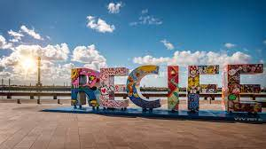
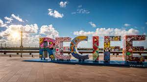
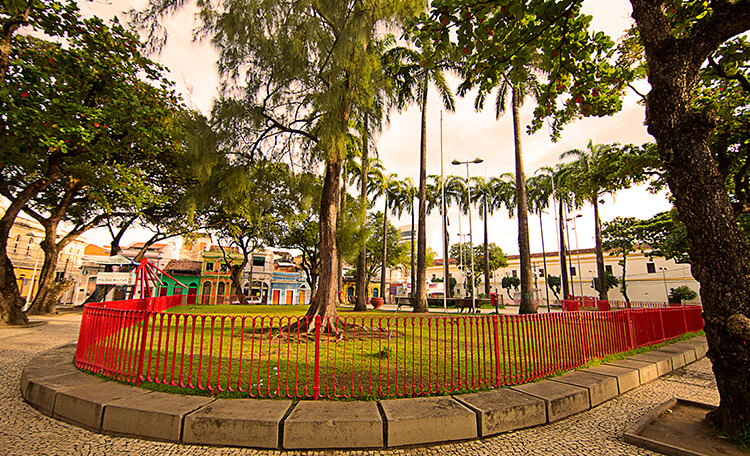
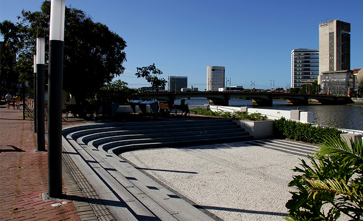

PONTOS TURISTICOS RECIFE ANTIGO
Praça do Arsenal
A praça foi projetada pelo paisagista Roberto Burle Marx e é composta por várias Palmeiras Imperiais, além de contar, com uma bela fonte. No entorno é possível observar na região norte a Capitania dos Portos, do lado leste a Torre Malakof (Construída no século XIX para servir como observatório astronômico), ao sul é possível observar o Paço do Frevo (Um dos principais museus da cidade do Recife, que faz alusão ao frevo), na Zona Oeste, da praça, encontra-se a Central de Atendimento ao Turista e a Embaixada Pernambucana (Museu de bonecos de cera)..
Cais do Emperador
O Cais do Imperador foi construído em 1859 para receber o imperador dom Pedro II e reformado em 2016. Ele apresenta uma vista do Antigo Cais da Alfandega, hoje o Shopping Paço Alfandega, a Ponte Mauricio de Nassau e da Ponte Giratória. O espaço conta com anfiteatro e com um café. Na sua frente é possível observar a Praça 17 com seu obelisco, erguido em 1927, em homenagem aos aviadores: Gago Coutinho e Sacadura Cabra que realizaram Travessia do oceano Atlântico em 1922.
